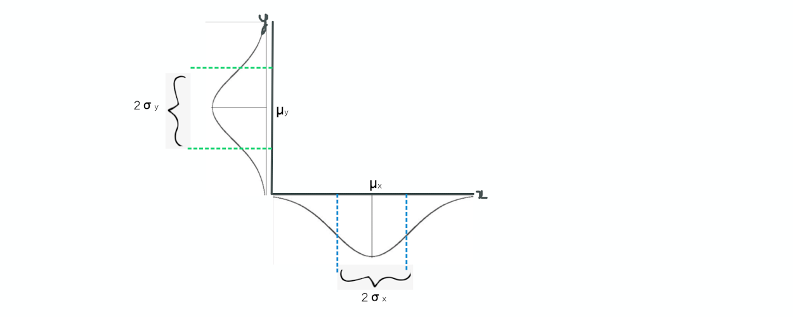

Ordinary least square in simple terms

In this blog we will try to derive the equations for slope and intercept for the regression line that better fits all the data points.
Let the data given be : (X1, Y1), (X2,Y2),...(Xn,Yn)
We want to fit a linear line, let that line be: y=mx+c
1. So given some data points, let's say we want to find the regression line that better fits the data.
2. We already know that equation of any straight line is y=mx+c, hence this will be the equation
of our linear regression fit
3. Let's try to understand the variable x and y pictorially. Each of these variables will have
distributions associated with them. Each of these distributions will have it's own mean and standard
deviation as shown in the figure:

As shown in the above figure, µx and µy are mean corresponding to x and y variables respectively.
And also σx and σy are standard deviations corresponding to x and y variables respectively.
4. We already know that 68% of data points are within 1 standard deviation from the mean in standard
normal distribution. Mean of x and y or ( µx , µy ) is the only coordinate which is close
to all these data points. So any regression line that better fits these data points should have to go through
( µx , µy )
This can also be derived in the next section. For now, any of the following line could be our regression line:

5. For understanding purpose let's pick the following line as our regression line:
6. In Mathematics, a slope of a line is the change in y coordinate with respect to the change in x coordinate. In
the below diagram we can say (a/b) as our slope right?

Hence slope = a/b
slope = 2σy / 2σx
slope = σy / σx
That is slope = standard deviation of y / standard deviation of x
But we are assuming this line. In real world there might not be perfect correlation between x and y
Hence, slope can be defined as:
where r is correlation coefficient. Read more on correlation coefficient to understand this.
7. So now we know that every regression line should has to pass through ( µx , µy )
if we substitute this and above slope in the y = mx+c
for c we will get following equation: